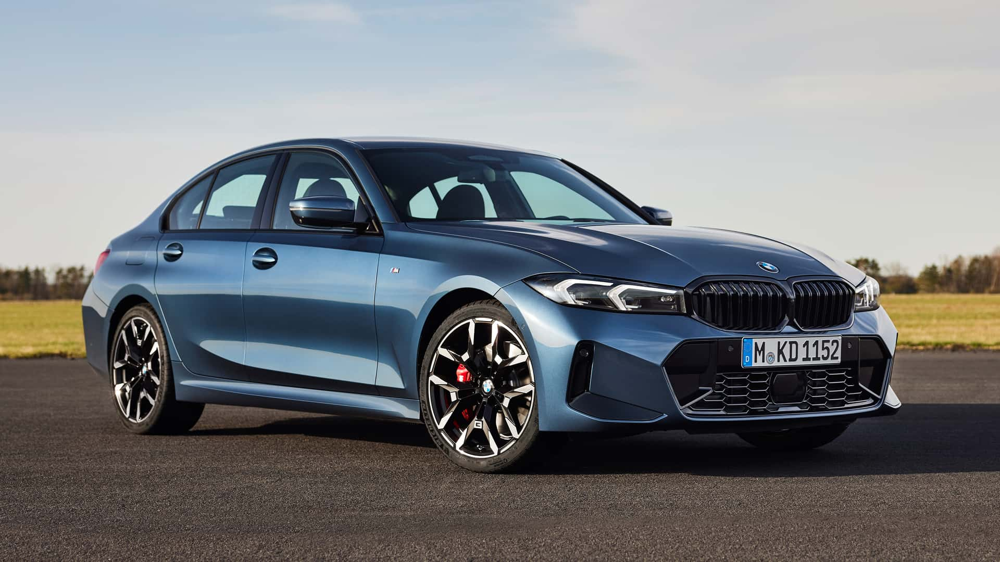
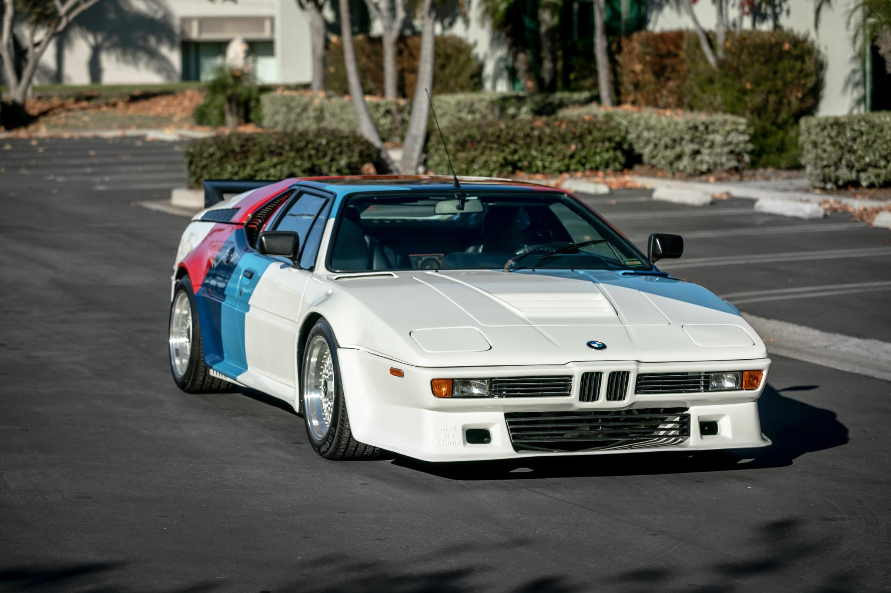
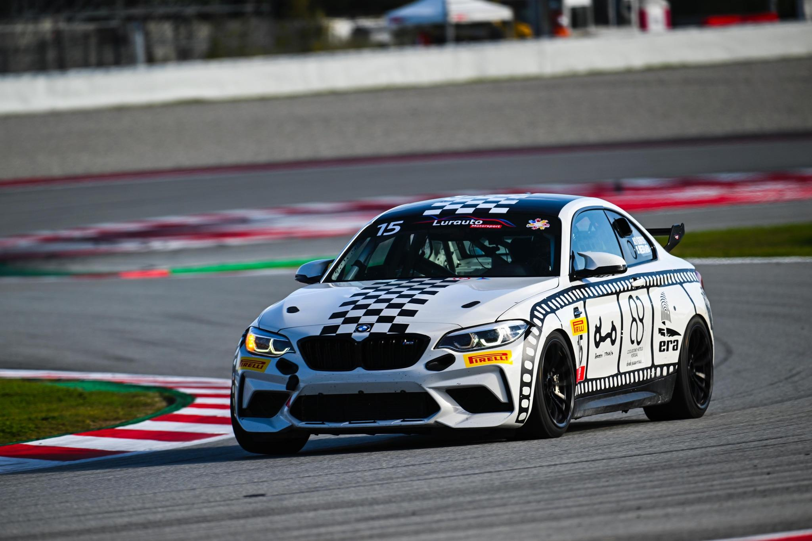
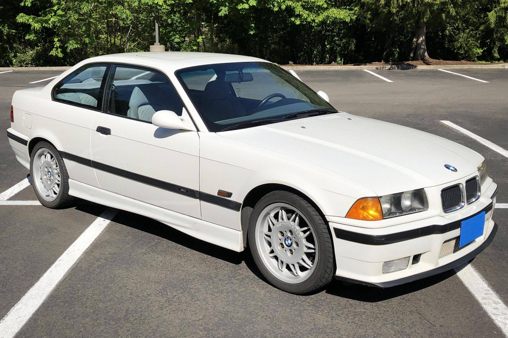
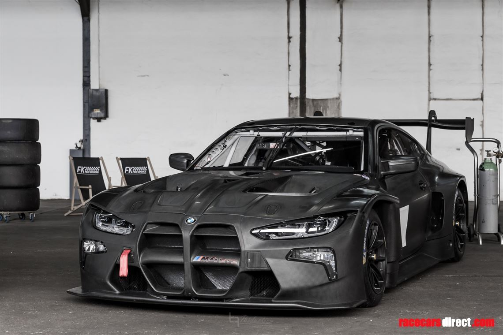
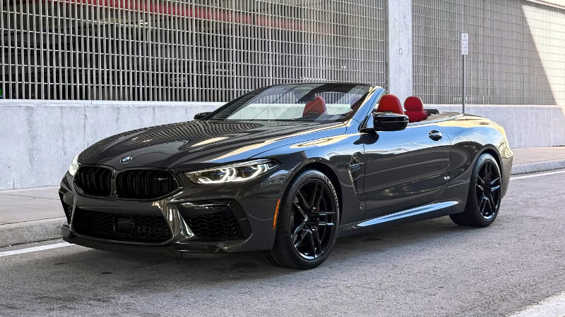

| Preço | R$ 346 ~ 412 mil |
| Consumo Cidade | 10,5 km/L |
| 0 a 100 km/h | 7,4s |
| Cavalos | 184 cv |
| Torque | 30,6 kgfm |

| Preço | R$ 3,5 ~ 4,5 milhões |
| Consumo Cidade | 5 km/L |
| 0 a 100 km/h | 5,6s |
| Cavalos | 277 cv |
| Torque | 33,6 kgfm |

| Preço | R$ 981 mil |
| Consumo Cidade | 10 km/L |
| 0 a 100 km/h | 3,8s |
| Cavalos | 530 cv |
| Torque | 66,3 kgfm |

| Preço | R$ 250 ~ 320 mil |
| Consumo Cidade | 6,5 km/L |
| 0 a 100 km/h | 5,5s |
| Cavalos | 321 cv |
| Torque | 35,6 kgfm |

| Preço | R$ 3,1 milhões |
| Consumo Cidade | 1,8 km/L |
| 0 a 100 km/h | 3,2s |
| Cavalos | 590 cv |
| Torque | 71,4 kgfm |

| Preço | R$ 1,1 ~ 1,3 milhões |
| Consumo Cidade | 5,8 km/L |
| 0 a 100 km/h | 3,3s |
| Cavalos | 625 cv |
| Torque | 76,5 kgfm |